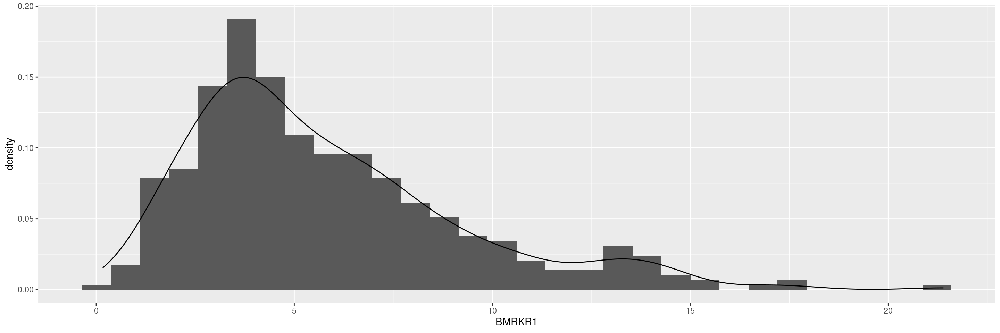

Code

Utilities for All Graphs
In this page we collect standard utilities for plotting which can be applied in principle to all graphs. Then we don’t need to repeat explaining these in each of the other graph pages. So it is kind of a cheat sheet for ggplot2. General introductions to ggplot2 and a pdf cheatsheet are also recommended and linked at https://ggplot2.tidyverse.org/.
We start by creating a graph. Note that we load our ggplot2.utils NEST package instead of ggplot2 so we benefit from additional utilities selected from the ggplot2 extension package ecosystem. Note that ggplot2.utils automatically loads also ggplot2, there we do not need to do that manually.
We also typically apply the df_explicit_na() function to the incoming dataset to convert character to factor variables, and code missing values as an explicit factor level, which avoids downstream problems.
Note that you may still run into warning messages after producing some of the graphs if a continuous variable you want to analyze contains NAs. To avoid these warning messages, you can use the drop_na() function from tidyr in the data manipulation step below to remove the rows containing NAs for the specific numeric column (e.g. drop_na(BMRKR1) to remove rows where BMRKR1 is missing).
Another possibility is to add na.rm = TRUE option to the ggplot() arguments, or alternatively select() the relevant variables and then delete any rows with missing values by na.omit() and finally pipe that to ggplot().


Title, subtitle, axis as well as caption labels can be added with the labs() layer. Alternatively specific tern functions can be used, see [Titles and Footnotes] below.
We can change the coordinate system with coord_*() layers, e.g. to rotate the plot.
We can set the limits of the coordinate axes with coord_cartesian(). This performs a real zoom into the plot, instead of just replacing outside values with NA as xlim() or lims() are doing it. It is therefore preferred.
General plot theme can be specified with theme_*() functions. The default theme is theme_gray(). For example in publications other themes might be preferred, such as theme_classic().
Many different scales mapping data values to visual values of an aesthetic are available in scale_*() functions.
We can change the location scale easily, for example to show x on a log scale:
Faceting is an elegant approach to create the same graph separately for each of the levels of one or multiple other factors. It can just be added as an additional layer to the existing graph. For example, we can show the distribution of the biomarker for each of the gender levels.
NEST provides a function to add titles, footnotes, and page numbers to grob objects (read: graphical objects) with tern::decorate_grob().
First, we need to prepare the pieces: graph, titles/footnotes. A ggplot object must be converted to a grob. We can use ggplot::ggplotGrob() to accomplish this easily.
Titles and footnotes can be defined as vectors where each element is a new line. Tip: The paste() function can be helpful to split long sentences across multiple lines.
grob_graph <- ggplotGrob(graph)
titles <- c(
"Distribution of the Baseline Biomarker 1",
"Biomarker Evaluable Patients",
"Protocol: AB12345 (Data Cut: 01 JAN 2021)"
)
footnotes <- c(
"Biomarker 1 = Gene ABC",
"Data Cut-off: 01 JAN 2021; RAVE Data Extracted: 15 JAN 2021",
"Program: biomark1_analysis.R"
)Now that the pieces are ready, we can put them together. The grid package allows us to manipulate grobs. Using grid::grid.draw() we can apply tern::decorate_grob() to our object, thus adding the titles/footnotes.
R version 4.4.0 (2024-04-24)
Platform: x86_64-pc-linux-gnu
Running under: Ubuntu 22.04.4 LTS
Matrix products: default
BLAS: /usr/lib/x86_64-linux-gnu/openblas-pthread/libblas.so.3
LAPACK: /usr/lib/x86_64-linux-gnu/openblas-pthread/libopenblasp-r0.3.20.so; LAPACK version 3.10.0
locale:
[1] LC_CTYPE=en_US.UTF-8 LC_NUMERIC=C
[3] LC_TIME=en_US.UTF-8 LC_COLLATE=en_US.UTF-8
[5] LC_MONETARY=en_US.UTF-8 LC_MESSAGES=en_US.UTF-8
[7] LC_PAPER=en_US.UTF-8 LC_NAME=C
[9] LC_ADDRESS=C LC_TELEPHONE=C
[11] LC_MEASUREMENT=en_US.UTF-8 LC_IDENTIFICATION=C
time zone: Etc/UTC
tzcode source: system (glibc)
attached base packages:
[1] grid stats graphics grDevices utils datasets methods
[8] base
other attached packages:
[1] ggplot2.utils_0.3.2 ggplot2_3.5.1 dplyr_1.1.4
[4] tidyr_1.3.1 tern_0.9.5.9005 rtables_0.6.9.9001
[7] magrittr_2.0.3 formatters_0.5.8.9000
loaded via a namespace (and not attached):
[1] utf8_1.2.4 generics_0.1.3
[3] EnvStats_2.8.1 stringi_1.8.4
[5] lattice_0.22-6 digest_0.6.36
[7] evaluate_0.24.0 fastmap_1.2.0
[9] jsonlite_1.8.8 Matrix_1.7-0
[11] backports_1.5.0 survival_3.7-0
[13] purrr_1.0.2 fansi_1.0.6
[15] scales_1.3.0 codetools_0.2-20
[17] Rdpack_2.6 cli_3.6.3
[19] ggpp_0.5.8-1 rlang_1.1.4
[21] rbibutils_2.2.16 munsell_0.5.1
[23] splines_4.4.0 withr_3.0.0
[25] yaml_2.3.9 tools_4.4.0
[27] polynom_1.4-1 checkmate_2.3.1
[29] colorspace_2.1-0 forcats_1.0.0
[31] ggstats_0.6.0 broom_1.0.6
[33] vctrs_0.6.5 R6_2.5.1
[35] lifecycle_1.0.4 stringr_1.5.1
[37] htmlwidgets_1.6.4 MASS_7.3-61
[39] pkgconfig_2.0.3 pillar_1.9.0
[41] gtable_0.3.5 glue_1.7.0
[43] xfun_0.45 tibble_3.2.1
[45] tidyselect_1.2.1 knitr_1.47
[47] farver_2.1.2 htmltools_0.5.8.1
[49] labeling_0.4.3 rmarkdown_2.27
[51] random.cdisc.data_0.3.15.9004 compiler_4.4.0